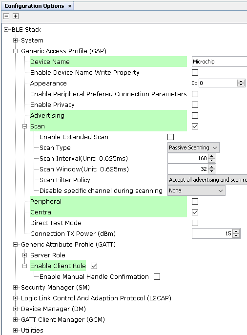
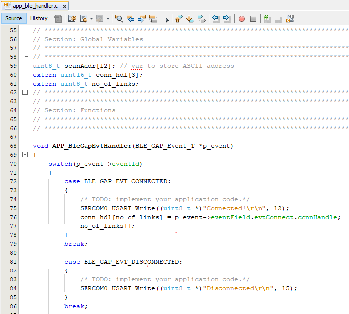

4.1.1.6 BLE Multilink Transparent UART
Getting Started with Central Building Blocks
BLE Multilink Transparent UART
Introduction
This document will help users create a multilink central device and send/receive characters between connected BLE devices over Microchip proprietary Transparent UART Profile. The multilink central enables users to connect multiple peripheral devices to a central device. The central and peripheral devices in this tutorial are WBZ451 devices.
Users can choose to just run the precompiled Application Example hex file on the WBZ451 Curiosity board and experience the demo or can go through the steps involved in developing the application from scratch.
It is recommend to follow the examples in order, by learning the basic concepts first and then progressing to the more advanced topics.
Recommended Reading
Hardware Requirement
| Tool | Qty |
|---|---|
| WBZ451 Curiosity Board | 3 (min) |
| Micro USB cable | 3 |
SDK Setup
Software
Smartphone App
None
Programming the precompiled hex file or Application Example
Programming the hex file using MPLABX IPE
Precompiled Hex file is located in "<Harmony Content Path>\wireless_apps_pic32cxbz2_wbz45\apps\ble\building_blocks\central\profiles_services\multilink\hex" folder
Follow the steps mentioned here
Caution: Users must choose the correct Device and Tool information
Programming the Application using MPLABX IDE
Follow steps mentioned in of Running a Precompiled Example document
Open and program the Application Example "central_ml_trp_uart.x" located in "<Harmony Content Path>\wireless_apps_pic32cxbz2_wbz45\apps\ble\building_blocks\central\profiles_services\multilink\firmware" using MPLABX IDE
<Harmony Content Path> how to find what is my Harmony Content Path
Demo Description
Upon programming the demo application, central device (WBZ451) will start scanning for near by peripheral devices to connect. After a connection has been made data can be sent back and forth over UART between the two devices that are connected. The central device continues scanning until 100 secs and allows new peripheral devices that are advertising to join. For this example we are going to demonstrate 2 BLE links
------------------Central Device------------------
| | |
| | |
Peripheral Device Peripheral Device Peripheral Device
Demo will print start of the scanning "Scanning",connected "Connected!" and disconnected "Disconnected" state on a terminal emulator like TeraTerm@ (Speed: 115200, Data: 8-bit, Parity: none, stop bits: 1 bit, Flow control: none) Application Data to be sent to the connected peripheral device must be entered in the terminal emulator.
Testing
Demo Experience when using 4 WBZ451 Curiosity boards, 3 configured as Peripheral and 1 configured as Central device
This section assumes that a user has already programmed the peripheral_trp_uart and central_trp_uart application on 2 WBZ451 Curiosity Boards.
Board1: Open TeraTerm @ (Speed: 115200, Data: 8-bit, Parity: none, stop bits: 1 bit, Flow control: none). Reset the board. Upon reset, "Scanning" message is displayed on the TeraTerm. Upon finding peripheral device with public address {0xA1, 0xA2, 0xA3, 0xA4, 0xA5, 0xA6} message "Found Peer Node" will be displayed and a connection request will be initiated "Initiating connection". During the scan time if more devices are available which will be true in this case, central device will keep initiating connections with the new peer nodes.
Board2/Board3/Board4: Open TeraTerm @ (Speed: 115200, Data: 8-bit, Parity: none, stop bits: 1 bit, Flow control: none). Reset the board. Upon reset, "Advertising" message is displayed on the TeraTerm.

After connection establishment, both the peripheral device (Board2/3/4) and central device(Board1) will display "Connected!" message on respective terminal windows.
Users can now start sending data back and forth between the central and peripheral device using the terminal emulator. Characters entered on any peripheral device's (Board2,3,4) terminal emulator will appear on central device's (Board1) terminal emulator Characters entered on central devices terminal emulator will appear on peripheral devices emulator in a round-robin fashion without priority. For example in order to send character "a" to all peripheral devices, "aaa" needs to be entered on terminal emulator of the central device
Developing the Application from scratch using MPLAB Code Configurator
This section explains the steps required by a user to develop this application example from scratch using MPLABx Code Configurator
Tip: New users of MPLAB Code Configurator are recommended to go through the overview.
Create a new MCC Harmony Project -- link for instructions
Import component configuration -- This step helps users setup the basic components and configuration required to develop this application. The imported file is of format .mc3 and is located in the path "<Harmony Content Path>\wireless_apps_pic32cxbz2_wbz45\apps\ble\building_blocks\central\profiles_services\multilink\firmware\central_ml_trp_uart.X". Users must follow the instructions mentioned here to import the component configuration.
Tip: Import and Export functionality of component configuration will help users to start from a known working setup of configuration
Accept Dependencies or satisfiers, select "Yes"
Verify if the Project Graph window has all the expected configuration

Verify Scan,Connection and Transparent UART Profile Configuration
- Select BLE_Stack component in project graph
Figure 4-21. .  - Select Transparent Profile component in project graph
Figure 4-22. . 
Generating Code
Instructions onhow to Generate Code
Files and Routines Automatically generated by the MCC
The OSAL, RF System, BLE System initialization routine executed during program initialization can be found in the project files. This initialization routine is automatically generated by the MCC

| Source Files | Usage |
|---|---|
| app.c | Application State machine, includes calls for Initialization of all BLE stack (GAP,GATT, SMP, L2CAP) related component configurations |
| app_ble\app_ble.c | Source Code for the BLE stack related component configurations, code related to function calls from app.c |
| app_ble\app_ble_handler.c | All GAP, GATT, SMP and L2CAP Event handlers |
| app_ble\app_trspc_handler.c | All Transparent UART Client related Event handlers |
| config\default\ble\profile_ble\ble_trspc\ble_trspc.c | All Transparent Client Functions for user application |
Tip: app.c is autogenerated and has a state machine based Application code sample, users can use this template to develop their application
Header Files
ble_gap.h– The header file contains BLE GAP functions and is automatically included in the app.c fileble_trspc.h– The header file associated with APIs and structures related to BLE Transparent Client functions for Application User.
Function Calls
MCC generates and adds the code to initialize the BLE Stack GAP, GATT, L2CAP and SMP in APP_BleStackInit() function
APP_BleStackInit() is the API that will be called inside the Applications Initial State -- APP_STATE_INIT in app.c
User Application Development
Include
"
ble_trspc.h" in app.c, BLE Transparent UART Server related API's are available here."
osal/osal_freertos_extend.h" in app_trsps_handler.c, OSAL related API's are available here.definitions.hin all the files where UART will be used to print debug information.
Tip: definitions.h is not specific to just UART peripheral, instead it must be included in all application source files where peripheral functionality will be exercised
User action is required as mentioned here
Start Scanning
BLE_GAP_SetScanningEnable(true, BLE_GAP_SCAN_FD_ENABLE, BLE_GAP_SCAN_MODE_OBSERVER, 1000);
This API is called in the Applications initialstate - APP_STATE_INIT in app.c. Scan duration is 100 secs
Scan Results and initiating a BLE Connection
BLE_GAP_EVT_ADV_REPORT event is generated upon finding Adverstisements on legacy channels
BLE connection can be initiated by using the API BLE_GAP_CreateConnection(&createConnParam_t);
// code snippet to filter scan results and initiate connection
// Filter Devices based of Address, for this example address checking only 2 bytes
if ((p_event->eventField.evtAdvReport.addr.addr[0] == 0xA1 && p_event->eventField.evtAdvReport.addr.addr[1] == 0xA2) ||
(p_event->eventField.evtAdvReport.addr.addr[0] == 0xB1 && p_event->eventField.evtAdvReport.addr.addr[1] == 0xB2) ||
(p_event->eventField.evtAdvReport.addr.addr[0] == 0xC1 && p_event->eventField.evtAdvReport.addr.addr[1] == 0xC2))
{
SERCOM0_USART_Write((uint8_t *)"Found Peer Node\r\n", 17);
BLE_GAP_CreateConnParams_T createConnParam_t;
createConnParam_t.scanInterval = 0x3C; // 37.5 ms
createConnParam_t.scanWindow = 0x1E; // 18.75 ms
createConnParam_t.filterPolicy = BLE_GAP_SCAN_FP_ACCEPT_ALL;
createConnParam_t.peerAddr.addrType = p_event->eventField.evtAdvReport.addr.addrType;
memcpy(createConnParam_t.peerAddr.addr, p_event->eventField.evtAdvReport.addr.addr, GAP_MAX_BD_ADDRESS_LEN);
createConnParam_t.connParams.intervalMin = 0x10;
createConnParam_t.connParams.intervalMax = 0x10;
createConnParam_t.connParams.latency = 0;
createConnParam_t.connParams.supervisionTimeout = 0x48;
SERCOM0_USART_Write((uint8_t *)"Initiating Connection\r\n", 23);
BLE_GAP_CreateConnection(&createConnParam_t);
}
Connected and Disconnected Events
In app_ble_handler.c BLE_GAP_EVT_CONNECTED event will be generated when a BLE connection is completed.
Connection Handler
Connection handle associated with the peer peripheral device needs to be saved for data exchange after a BLE connection.
p_event->eventField.evtConnect.connHandle has this information
- In Multilink Application, unique connection handler's will be generated for all the peripheral links
Figure 4-25. . 
Transmit Data
- Add "APP_MSG_UART_CB" to the generated APP_MsgId_T
Figure 4-26. . 
BLE_TRSPC_SendData(conn_hdl , 1, &data); is the API to be used for sending data towards the central device Note: The precompiled application example uses a UART callback to initiate the data transmission upon receiving a character on UART
Example Implementation for Transmitting the received data over UART using the BLE_TRSPC_SendData API
uint16_t conn_hdl[3] = {0xFFFF, 0xFFFF, 0xFFFF};// connection handle info captured @BLE_GAP_EVT_CONNECTED event
uint8_t no_of_links;// No of connected peripheral devices
uint8_t i = 0;// link index
uint8_t uart_data;
void uart_cb(SERCOM_USART_EVENT event, uintptr_t context)
{
APP_Msg_T appMsg;
// If RX data from UART reached threshold (previously set to 1)
if( event == SERCOM_USART_EVENT_READ_THRESHOLD_REACHED )
{
// Read 1 byte data from UART
SERCOM0_USART_Read(&uart_data, 1);
appMsg.msgId = APP_MSG_UART_CB;
OSAL_QUEUE_Send(&appData.appQueue, &appMsg, 0);
}
}
void APP_UartCBHandler()
{
// Send the data from UART to connected device through Transparent service
BLE_TRSPC_SendData(conn_hdl[i], 1, &uart_data);
i++;
if(i==no_of_links) i = 0; //reset link index
}
//If msg received in Queue, handle the Queue message based on msgID
if (OSAL_QUEUE_Receive(&appData.appQueue, &appMsg, OSAL_WAIT_FOREVER))
{
if(p_appMsg->msgId==APP_MSG_BLE_STACK_EVT)
{
// Pass BLE Stack Event Message to User Application for handling
APP_BleStackEvtHandler((STACK_Event_T *)p_appMsg->msgData);
}
else if(p_appMsg->msgId==APP_MSG_BLE_STACK_LOG)
{
// Pass BLE LOG Event Message to User Application for handling
APP_BleStackLogHandler((BT_SYS_LogEvent_T *)p_appMsg->msgData);
}
else if(p_appMsg->msgId==APP_MSG_UART_CB)
{
// Transparent UART Client Data transfer Event
APP_UartCBHandler();
}
}
Receive Data
BLE_TRSPC_EVT_RECEIVE_DATA is the event generated when data is sent from central device
Users need to use the BLE_TRSPC_GetDataLength(&data_len) API to extract the length of application data received
BLE_TRSPC_GetData(&conn_hdl, data); API is used to retrieve the data, conn_hdl is the value obtained from Connection Handler section
Tip: BLE_TRSPC_Event_T p_event structure stores the information about BLE transparent UART callback functions
Example Implementation for printing the received data from peripheral device over UART
/* TODO: implement your application code.*/
uint16_t data_len;
uint8_t *data;
// Retrieve received data length
BLE_TRSPC_GetDataLength(p_event->eventField.onReceiveData.connHandle, &data_len);
// Allocate memory according to data length
data = OSAL_Malloc(data_len);
if(data == NULL)
break;
// Retrieve received data
BLE_TRSPC_GetData(p_event->eventField.onReceiveData.connHandle, data);
// Output received data to UART
SERCOM0_USART_Write(data, data_len);
// Free memory
OSAL_Free(data);Users can exercise various other BLE functionalities by using BLE Stack API